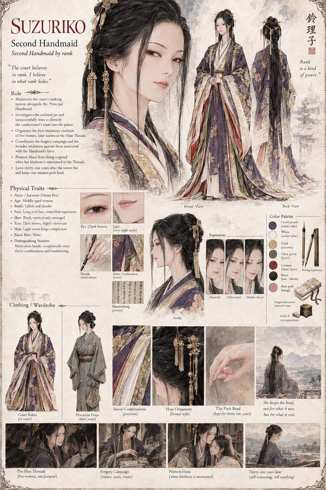

Suzuriko
Second Handmaid, by rank
Second Handmaid by rank, and the only person at court who thinks to ask where an unlisted jar of sweets actually came from. When her own service goes unrewarded once too often, she organizes the first coalition of women who will become the Nine Threads, coordinates a forgery campaign to settle the court's accounts on her own terms, and — almost as an aside to all of it — makes sure one particular kindness to a girl never gets mentioned near the Threads at all. She outlives the tower fire by thirty-one years, and keeps one bead, uneaten, the entire time.
“The court believes in rank. I believe in what rank hides.”